Webpage: https://cal-cs184-student.github.io/hw-webpages-sp24-diana-qing/hw2/index.html
Overview
In this homework, I used de Casteljau's algorithm to create Bezier curves and surfaces given a set of control points. I also used the half-edge data structure to traverse triangle meshes, which allowed me to (1) achieve flat and Phong shading for smooth surfaces and (2) implement edge flips and splits to ultimately upsample meshes using loop subdivision. Something interesting I learned from completing this assignment is how subdivision may not be symmetrical depending on what edges exist in the starting .dae file, but this asymmetry can potentially be addressed through splitting and flipping some edges before beginning subdivision. When creating Bezier curves, it was also interesting seeing how changing the location of one control point only affects the curve between this control point and the other points it's directly connected to, but doesn't affect the curves among the other control points.
Section I: Bezier Curves and Surfaces
Part 1: Bezier Curves with 1D de Casteljau Subdivision
Briefly explain de Casteljau's algorithm and how you implemented it in order to evaluate Bezier curves.Given n control points, de Casteljau's algorithm allows us to recursively use linear interpolation to find intermediate control points until there's only 1 point remaining, resulting in a smooth Bezier curve connecting this 1 final point to the leftmost and rightmost original control points. The algorithm also includes a parameter t, which is a value between 0 and 1, that controls .
Starting with n control points, de Casteljau's algorithm uses linear interpolation to find the n-1 intermediate control points. In the next step, it linearly interpolates these n-1 intermediate control points to find the next n-2 intermediate points. In BezierCurve::evaluateStep(), we only need to go through one step of de Casteljau's. Thus, I iterated through the n points passed into the function. On iteration i, where i is between 0 and points.size()-1 (inclusive), I linearly interpolated points p_i = points.at(i) and p_{i+1} = points.at(i+1) by computing lerp(p_i, p_{i+1}, t) or (1 - t) * p_i + t * p_{i+1}. This gave me the intermediate control point between p_i and p_{i+1}. I stored the lerp result in a 1D vector called intermediate_control_pts, then incremented i by 1, and repeated the process. At the end, I returned intermediate_control_pts from the function because it contains the n-1 intermediate control points.
Take a look at the provided .bzc files and create your own Bezier curve with 6 control points of your choosing. Use this Bezier curve for your screenshots below.
I created a new .bzc file, curve3.bzc, containing 6 control points:
Show screenshots of each step / level of the evaluation from the original control points down to the final evaluated point. Press E to step through. Toggle C to show the completed Bezier curve as well.
|
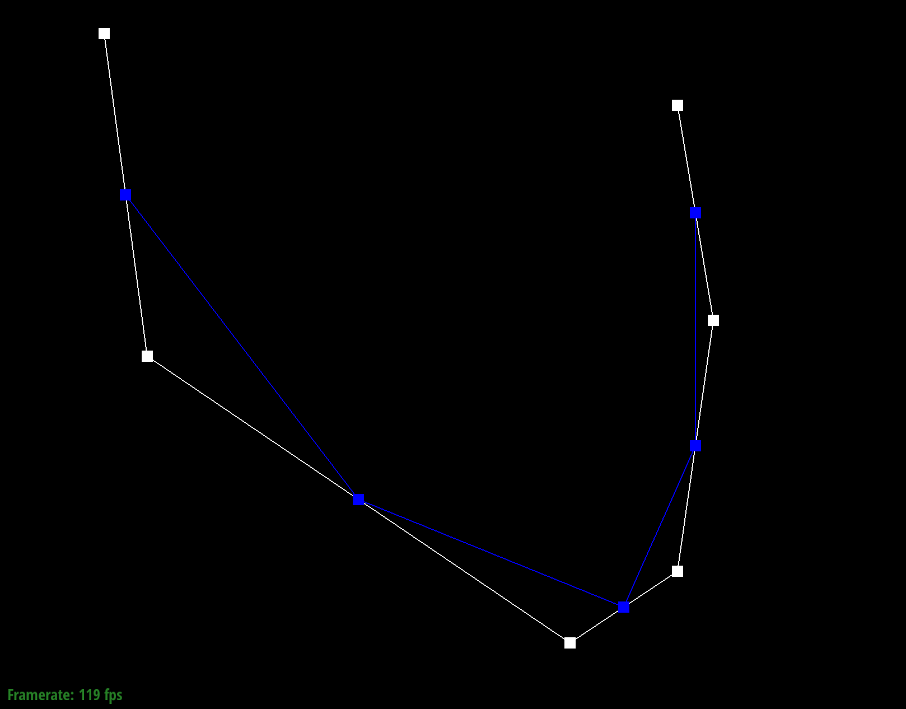
|
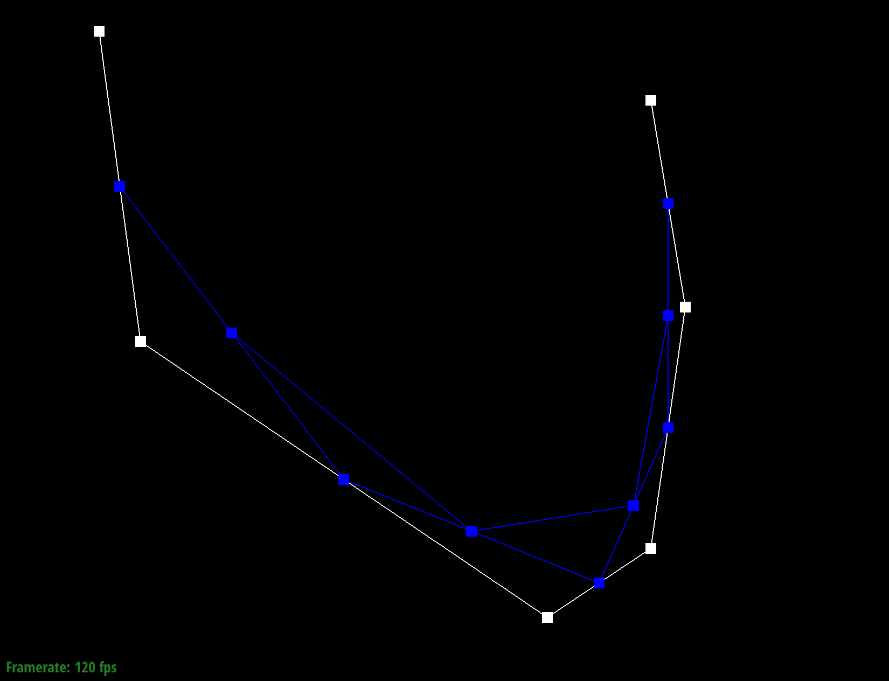
|
|
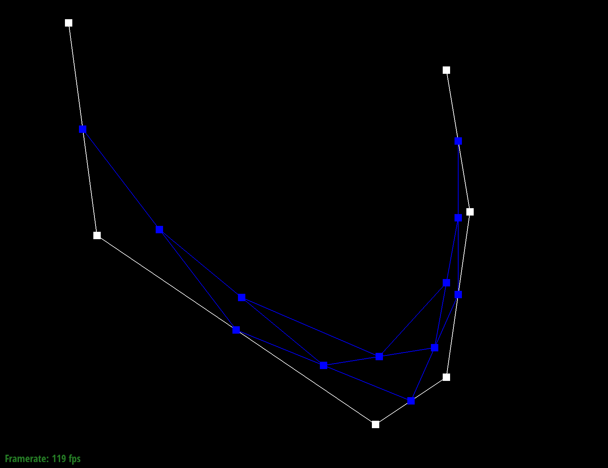
|
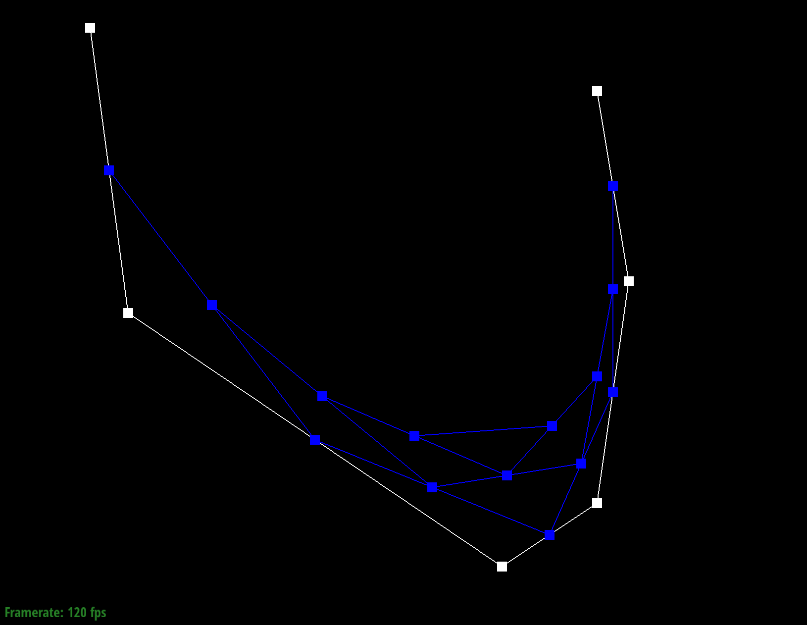
|
|
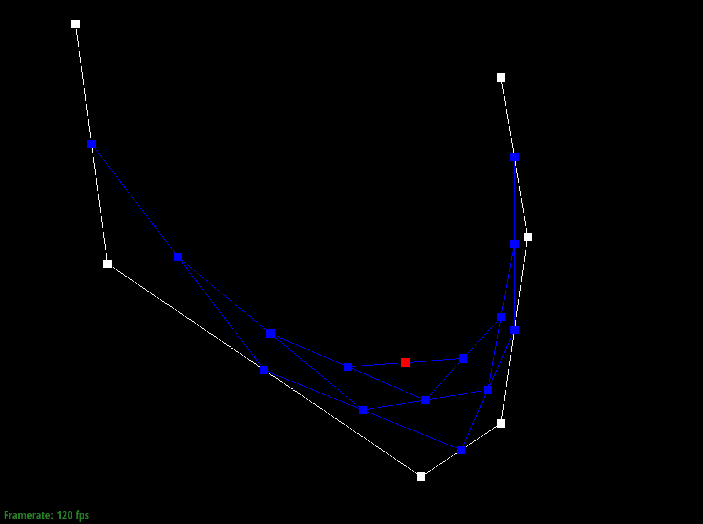
|
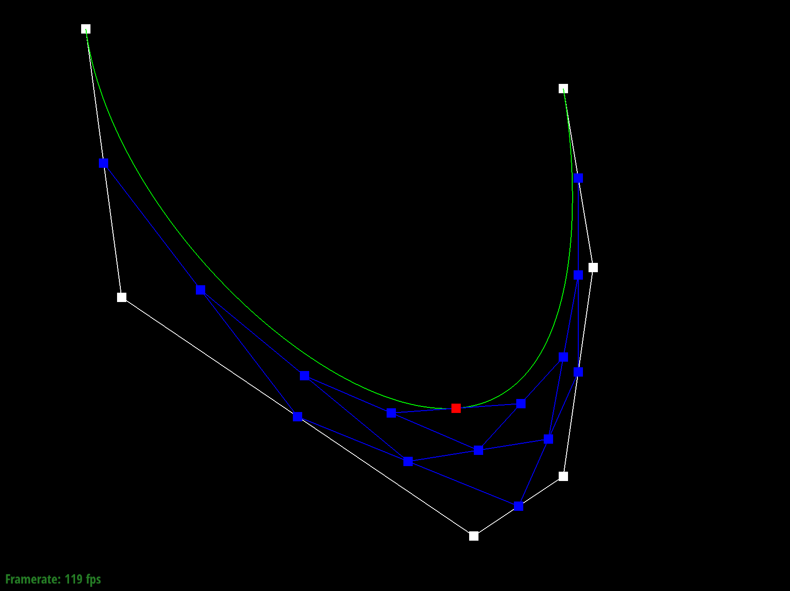
|
Show a screenshot of a slightly different Bezier curve by moving the original control points around and modifying the parameter \(t\) via mouse scrolling.
Using curve3.bzc, I obtained a slightly different Bezier curve by manually moving around the original control points and modifying t through mouse scrolling.
Part 2: Bezier Surfaces with Separable 1D de Casteljau
Briefly explain how de Casteljau algorithm extends to Bezier surfaces and how you implemented it in order to evaluate Bezier surfaces.de Casteljau's algorithm extends to Bezier surfaces because instead of only having 1 Bezier curve, we now have multiple curves, each of which we perform de Casteljau's algorithm on to ultimately end up with 1 final point for each curve. Then we perform 1 final step of de Casteljau's on these final points to find the curve that connects these . For each curve, the process of performing de Casteljau's is the same as in Part 1 (i.e. given ), which means we can reuse our BezierCurve::evaluateStep() function from Part 1 to find the final point for each Bezier curve.
Show a screenshot of bez/teapot.bez (not .dae) evaluated by your implementation.
Section II: Triangle Meshes and Half-Edge Data Structure
Part 3: Area-Weighted Vertex Normals
Briefly explain how you implemented the area-weighted vertex normals.YOUR RESPONSE GOES HERE
Show screenshots of dae/teapot.dae (not .bez) comparing teapot shading with and without vertex normals. Use Q to toggle default flat shading and Phong shading.
Part 4: Edge Flip
Briefly explain how you implemented the edge flip operation and describe any interesting implementation / debugging tricks you have used.I implemented edge flips by closely following the instructions in the spec. I began by listing every mesh element (vertex, edge, face, and half-edge) that exists before and after flipping and defined the mesh elements in relation to each another. Given that the input edge is the edge being flipped, we can define each element based on it's relationship to this edge's halfedges. Then I went through each mesh element and updated its pointers to reflect its relationship to other mesh elements after the flipping operation takes place. Flipping an edge doesn't create any new elements, so the majority of the work after flipping an edge was to update pointers.
An implementation trick I used is drawing a detailed diagram labeling each mesh element that exists before and after flipping, which allowed me to keep track of exactly what updates needed to be made to the pointers of each mesh element. It also makes it clear what the relationship between mesh elements are (both before and after flipping), and I could directly translate these relationships into code, which was what the bulk of the coding for this task consisted of. From the diagram below, we can see that when we flip edge bc, the main changes that get made are (1) the orientation of faces f0 and f1 change, (2) edge e0 now connects vertices a and d instead of vertices b and c, and (3) the orientation of halfedges h0 and h3 is now horizontal instead of vertical because the edge they are associated with (e0) has changed to be horizontally oriented.
Show screenshots of the teapot before and after some edge flips.
|
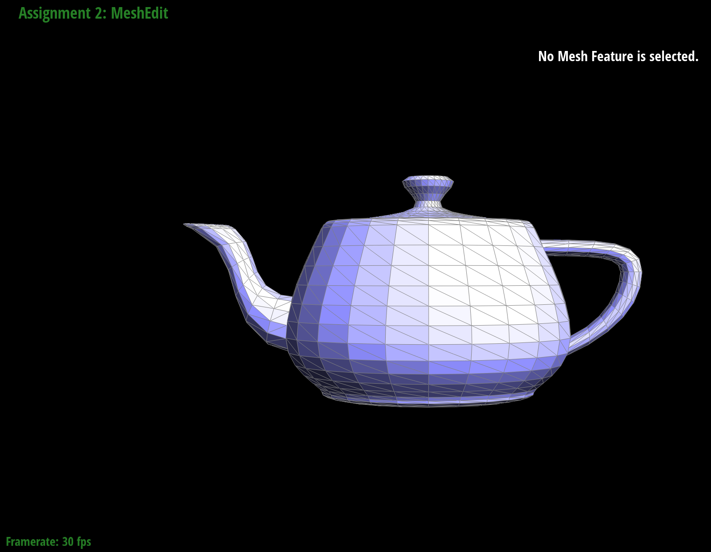
|
|
|
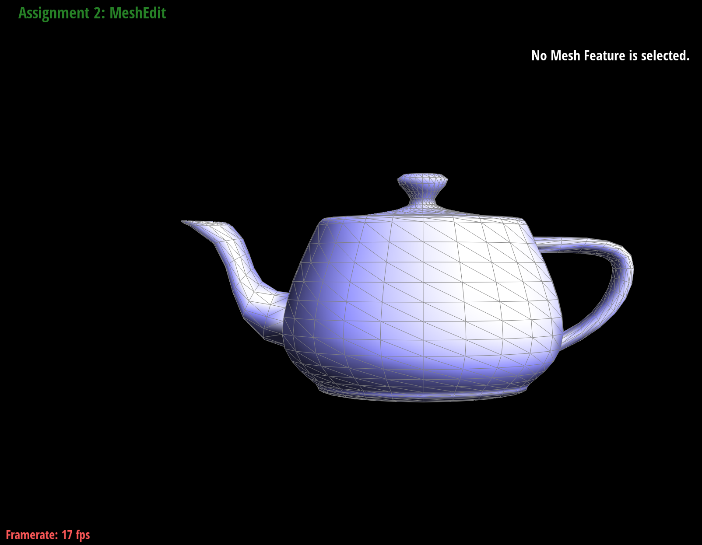
|

|
Write about your eventful debugging journey, if you have experienced one.
I didn't experience an eventful debugging journey since I was able to get my edge flips to work on the first try by closely following the guidelines in the spec and drawing a detailed diagram labeling every mesh element before and after flipping so I knew exactly what updates had to made to the pointers of each mesh element. Essentially, I translated the relationships between mesh elements in my diagram into code, which helped prevent errors.
Part 5: Edge Split
Briefly explain how you implemented the edge split operation and describe any interesting implementation / debugging tricks you have used.Similar to Part 4, I implemented edge splits by closely following the instructions in the spec and drawing a detailed diagram where I labeled every mesh element (vertex, edge, face, and half-edge) that exists before and after splitting, which allowed me to keep track of exactly what updates needed to be made to each mesh element along with what new elements I need to create. Drawing this diagram was a helpful implementation and debugging trick because it clearly shows the relationship between every mesh element before and after splitting, and I could directly translate these relationships into code, which is what the coding for this task consisted of.
From the diagram above, we can see that after splitting edge e0, which connects vertices b and c in the original mesh, new elements are created. Specifically, we create 1 new vertex (m), 3 new edges (e5, e6, e7), 2 new faces (f2 and f3), and 6 new half-edges (h10, h11, h12, h13, h14, h15).
Show screenshots of a mesh before and after some edge splits.
Here are screenshots of teapot.dae before and after some edge splits:
|
|
|
Show screenshots of a mesh before and after a combination of both edge splits and edge flips.
Here are screenshots of teapot.dae before any edge splits and flips, after some edge splits (but no edge flips), and after both edge splits and flips:
Write about your eventful debugging journey, if you have experienced one.
Similar to Part 4, I didn't experience an eventful debugging journey as I was able to get my edge splits working on the first try by closely following the instructions in the spec and drawing a detailed diagram showing what mesh elements exist before and after splitting, which allowed me to easily see how each mesh element should be updated and what new mesh elements I had to create. Essentially, I directly translated the relationships between mesh elements in my diagram into code, which prevented errors.
If you have implemented support for boundary edges, show screenshots of your implementation properly handling split operations on boundary edges.
I split boundary edges similarly to how I split non-boundary edges. I drew a diagram labeling every mesh element that exists before and after splitting a boundary edge, allowing me to see how each element should be updated after splitting and what new elements needed to be created. Instead of turning 2 faces into 4 faces, we just turn 1 face into 2 faces when splitting boundary edges. Thus, the new elements created from splitting a boundary edge are: 1 new vertex (m), 2 new edges (e3 and e4), 1 new face (f1), and 4 new half-edges (h6, h7, h8, h9).
Before splitting, for the half-edges associated with the boundary edge (h0 and h1), it's also important to indicate which halfedge is inside the triangle face versus which is in the boundary face. For the edge e0 passed into HalfedgeMesh::splitEdge(), I check if e0->halfedge is in the boundary. If it's not, I set halfedge h0 to be e0->halfedge->twin since I always want h0 to be the halfedge associated with the boundary edge that's in the boundary as that's how it's labeled in my diagram. Then I can set all the other mesh elements based on h0.
Below are images of beetle.dae before any boundary edge splits and after splitting some boundary edges (and also some non-boundary edges to ensure that splitting both boundary and non-boundary edges in the same .dae file work).
Part 6: Loop Subdivision for Mesh Upsampling
Briefly explain how you implemented the loop subdivision and describe any interesting implementation / debugging tricks you have used.YOUR RESPONSE GOES HERE
Take some notes, as well as some screenshots, of your observations on how meshes behave after loop subdivision. What happens to sharp corners and edges? Can you reduce this effect by pre-splitting some edges?
YOUR RESPONSE GOES HERE
Below are the results of loop subdivision on cube.dae without pre-splitting any edges:

|
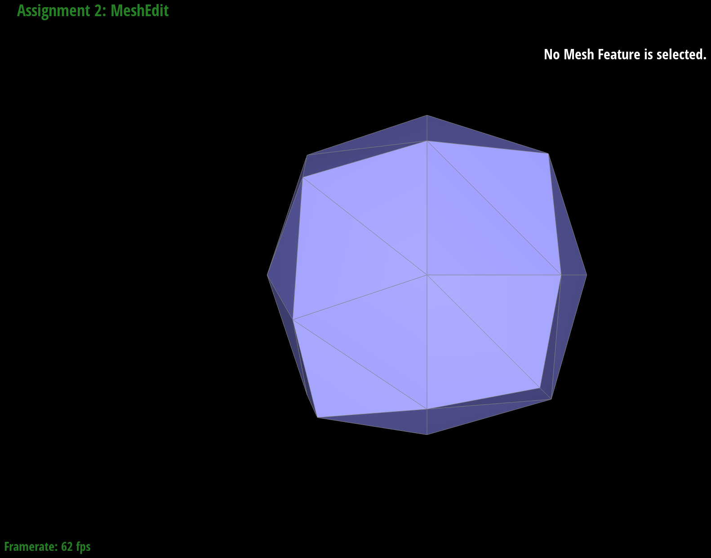
|
|
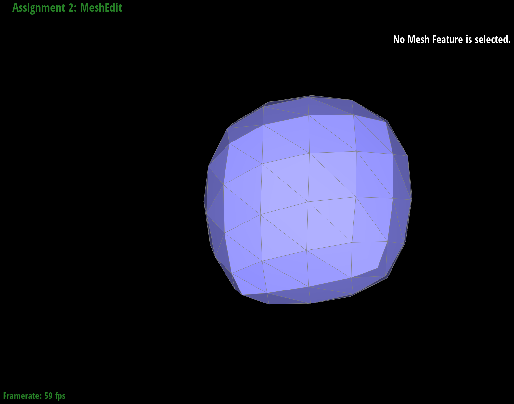
|
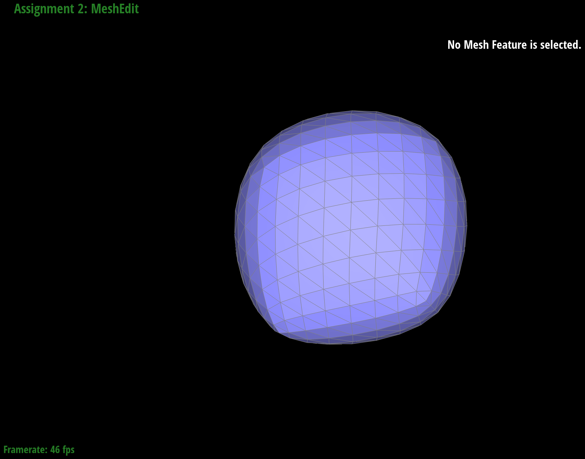
|
|
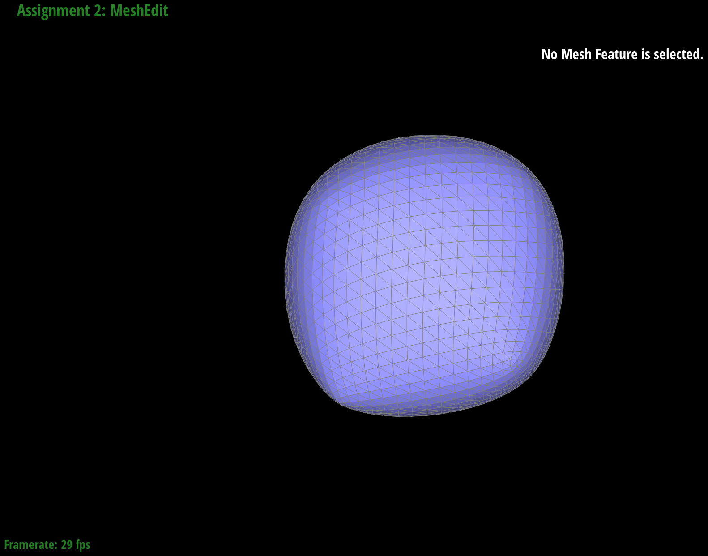
|
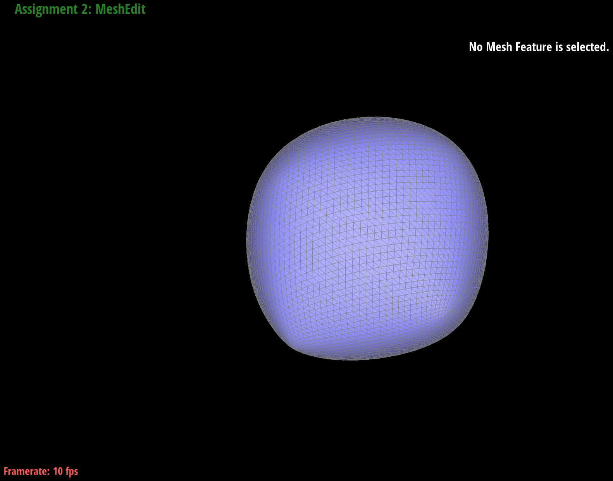
|
Load dae/cube.dae. Perform several iterations of loop subdivision on the cube. Notice that the cube becomes slightly asymmetric after repeated subdivisions. Can you pre-process the cube with edge flips and splits so that the cube subdivides symmetrically? Document these effects and explain why they occur. Also explain how your pre-processing helps alleviate the effects.
Below are results of splitting some edges in cube.dae before beginning loop subdivision. Pre-processing by pre-splitting some edges makes the cube subdivide more symmetrically because
|
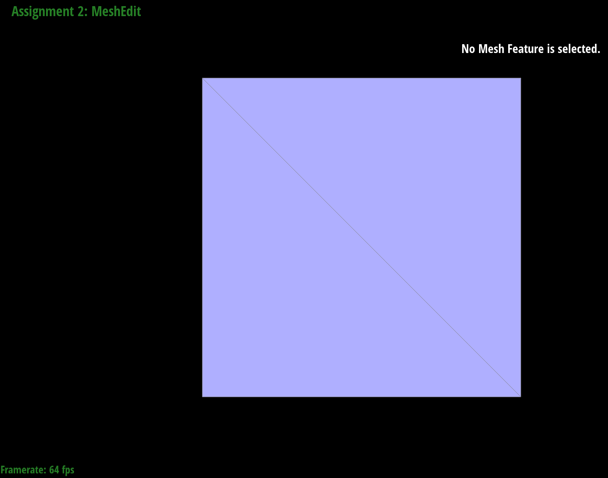
|
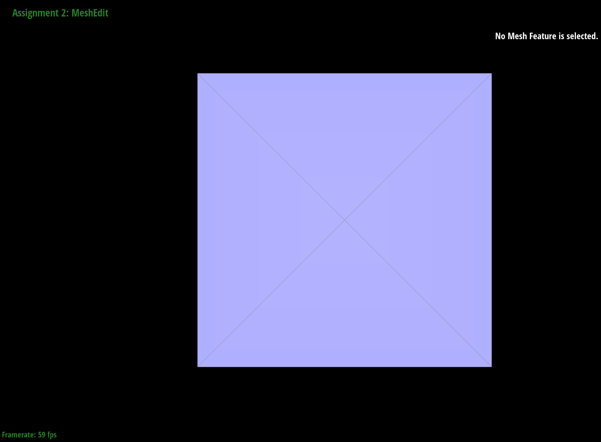
|
|
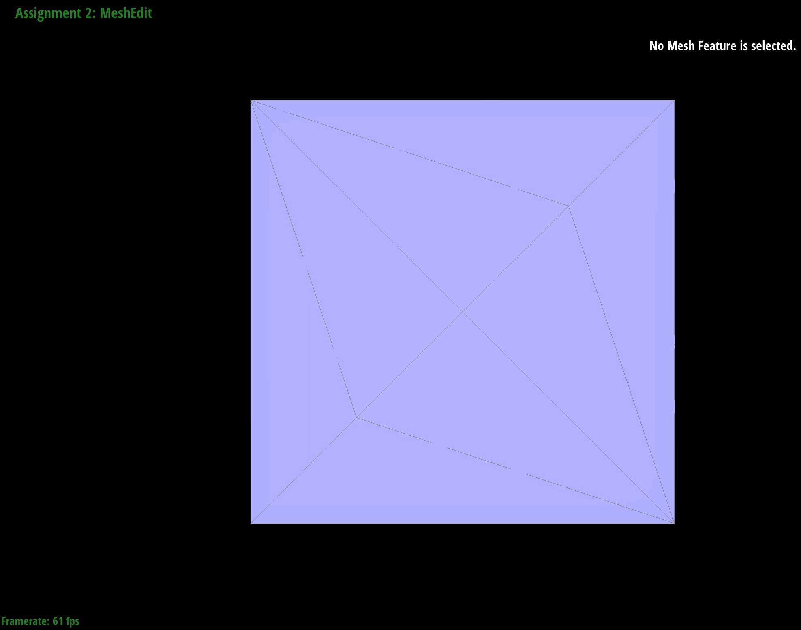
|
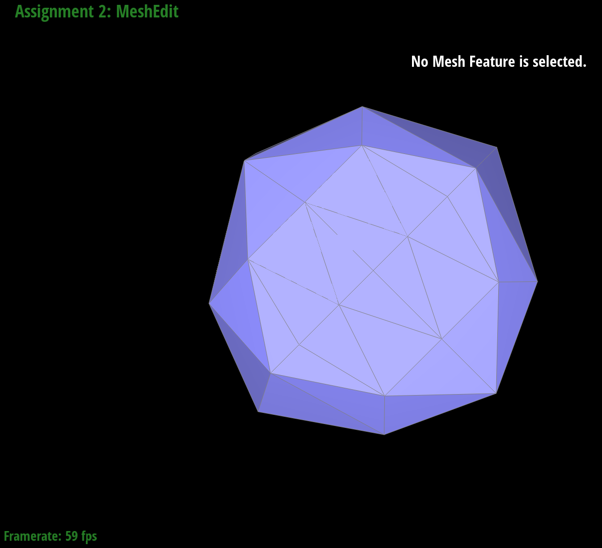
|
|
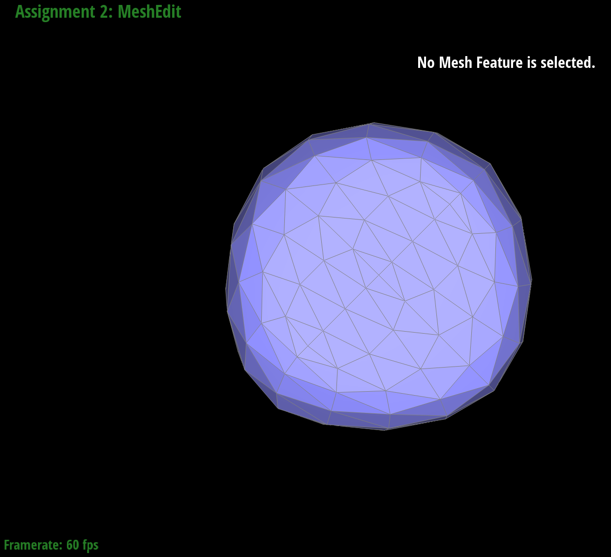
|
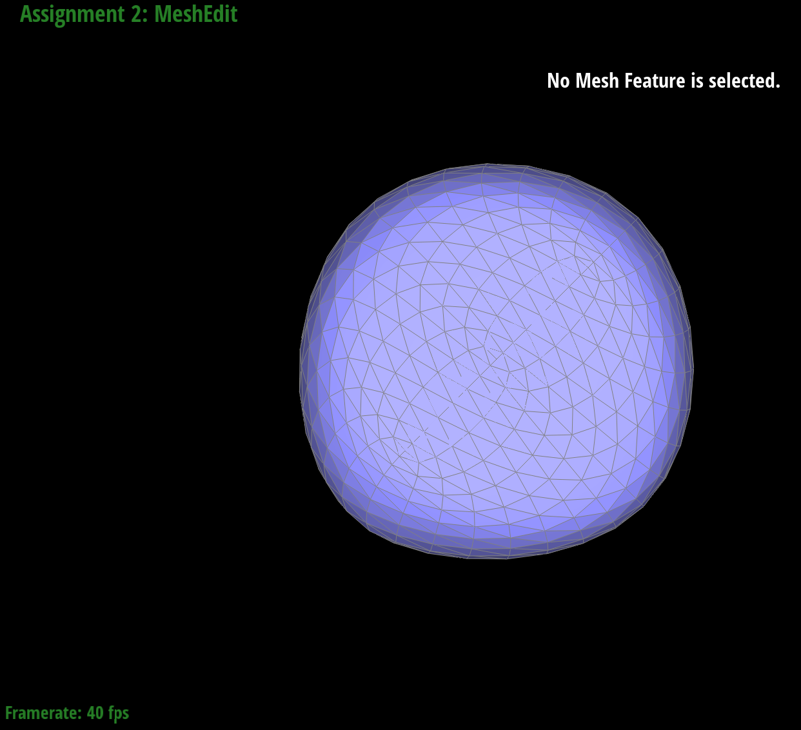
|
|
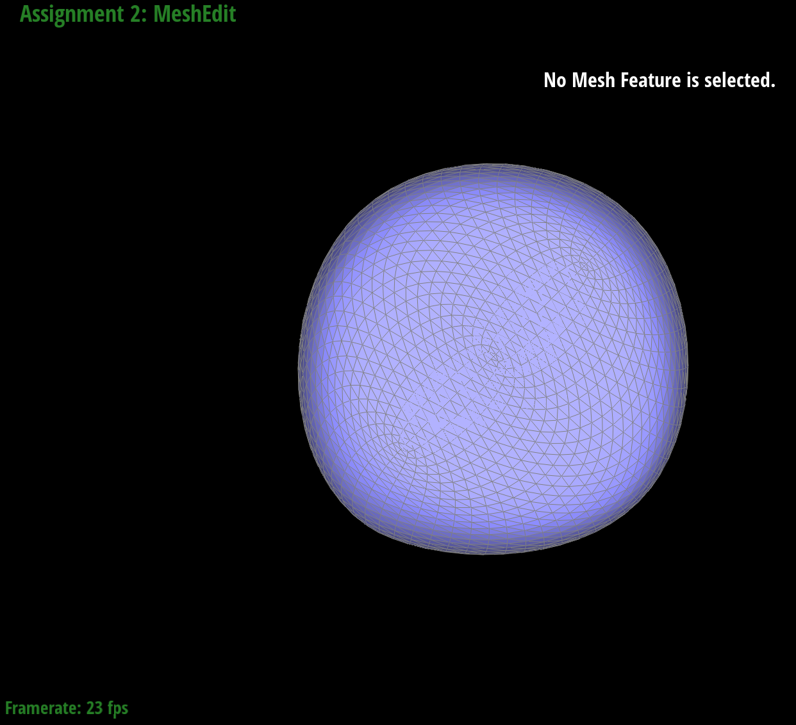
|
If you have implemented any extra credit extensions, explain what you did and document how they work with screenshots.
YOUR RESPONSE GOES HERE
Part 7 (Optional, Possible Extra Credit)
Save your best polygon mesh as partsevenmodel.dae in your docs folder and show us a screenshot of the mesh in your write-up.YOUR RESPONSE GOES HERE
Include a series of screenshots showing your original mesh and your mesh after one and two rounds of subdivision. If you have used custom shaders, include screenshots of your mesh with those shaders applied as well.
YOUR RESPONSE GOES HERE
Describe what you have done to enhance your mesh beyond the simple humanoid mesh described in the tutorial.
YOUR RESPONSE GOES HERE